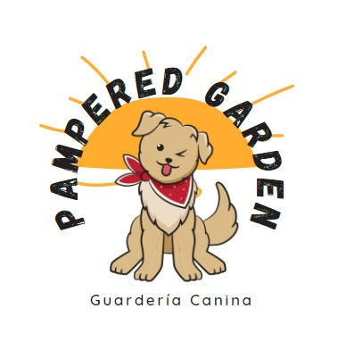

Guardería Canina "PAMPARED GARDEN"
¡Bienvenidos a nuestra guardería!
Un lugar seguro y divertido para tu peludo consentido.

Nuestros Servicios
- Guardería Diurna
- Horario flexible: De lunes a viernes, desde las 7:00 a.m. hasta las 7:00 p.m.
- Espacio seguro y divertido: Nuestras instalaciones cuentan con áreas de juego al aire libre y espacios interiores acogedores.
- Supervisión constante: Nuestro equipo de cuidadores está siempre pendiente de los perros para garantizar su seguridad y bienestar.
- Guardería Nocturna y de Fin de Semana
- Para esos momentos especiales: Si tienes planes nocturnos o un fin de semana fuera de la ciudad, deja a tu perro con nosotros.
- Camas cómodas y tranquilidad: Cada perro tiene su propia cama y espacio para descansar.
- Cuidado personalizado: Nos adaptamos a las necesidades individuales de cada peludo huésped.
- Paseos y Ejercicio
- Salidas al aire libre: Realizamos paseos diarios para que los perros estiren las patas y disfruten del sol.
- Juegos y diversión: Organizamos actividades para mantener a los perros activos y felices.
¡Esperamos verte pronto y darle a tu peludo amigo una experiencia inolvidable en PAMPARED GARDEN! 🐾